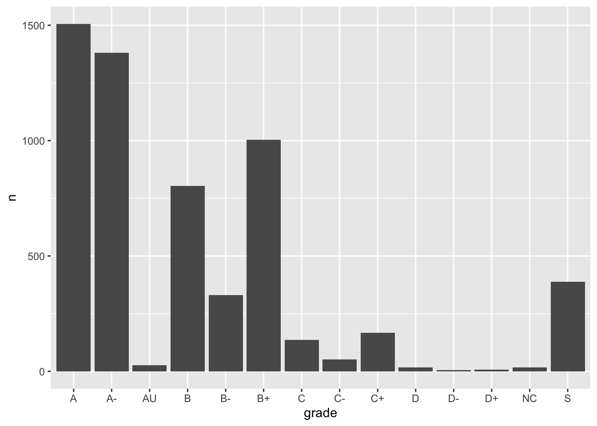

subset the data to only filter() the rows and select() the columns of interest
mutate() existing variables and define new variables
summarize() various aspects of a variable, both overall and by group (group_by())
reshape our data to fit the task at hand (pivot_longer(), pivot_wider())
join() different datasets into one
16.4 12.2 Factors
In the remaining days of our data preparation unit, we’ll focus on working with special types of “categorical” variables: characters and factors. Variables with these structures often require special tools and considerations.
We’ll focus on two common considerations:
Regular expressions When working with character strings, we might want to detect, replace, or extract certain patterns. For example, recall our data on courses:
Focusing on just the sem character variable, we might want to…
change FA to fall_ and SP to spring_
keep only courses taught in fall
split the variable into 2 new variables: semester (FA or SP) and year
Converting characters to factors (and factors to meaningful factors) (today) When categorical information is stored as a character variable, the categories of interest might not be labeled or ordered in a meaningful way. We can fix that!
16.4.1 Example 1: Default Order
Recall our data on presidential election outcomes in each U.S. county (except those in Alaska):
library(tidyverse)
── Attaching core tidyverse packages ──────────────────────── tidyverse 2.0.0 ──
✔ dplyr 1.1.4 ✔ readr 2.1.5
✔ forcats 1.0.0 ✔ stringr 1.5.1
✔ ggplot2 3.5.1 ✔ tibble 3.2.1
✔ lubridate 1.9.4 ✔ tidyr 1.3.1
✔ purrr 1.0.4
── Conflicts ────────────────────────────────────────── tidyverse_conflicts() ──
✖ dplyr::filter() masks stats::filter()
✖ dplyr::lag() masks stats::lag()
ℹ Use the conflicted package (<http://conflicted.r-lib.org/>) to force all conflicts to become errors
state_abbr historical county_name total_votes_20 repub_pct_20 dem_pct_20
1 AL red Autauga County 27770 71.44 27.02
2 AL red Baldwin County 109679 76.17 22.41
3 AL red Barbour County 10518 53.45 45.79
4 AL red Bibb County 9595 78.43 20.70
5 AL red Blount County 27588 89.57 9.57
6 AL red Bullock County 4613 24.84 74.70
dem_support_20
1 low
2 low
3 low
4 low
5 low
6 high
Check out the below visual and numerical summaries of dem_support_20:
low = the Republican won the county by at least 5 percentage points
medium = the Republican and Democrat votes were within 5 percentage points
high = the Democrat won the county by at least 5 percentage points
dem_support_20 n
1 high 458
2 low 2494
3 medium 157
Follow-up:
What don’t you like about these results?
The categories are in alphabetical order (high, low, medium), which isn’t particularly meaningful in this context. We would probably prefer them to be ordered by level of Democratic support (low, medium, high).
16.4.2 Example 2: Change Order using fct_relevel
The above categories of dem_support_20 are listed alphabetically, which isn’t particularly meaningful here. This is because dem_support_20 is a character variable and R thinks of character strings as words, not category labels with any meaningful order (other than alphabetical):
str(elections)
'data.frame': 3109 obs. of 7 variables:
$ state_abbr : chr "AL" "AL" "AL" "AL" ...
$ historical : chr "red" "red" "red" "red" ...
$ county_name : chr "Autauga County" "Baldwin County" "Barbour County" "Bibb County" ...
$ total_votes_20: int 27770 109679 10518 9595 27588 4613 9488 50983 15284 12301 ...
$ repub_pct_20 : num 71.4 76.2 53.5 78.4 89.6 ...
$ dem_pct_20 : num 27.02 22.41 45.79 20.7 9.57 ...
$ dem_support_20: chr "low" "low" "low" "low" ...
We can fix this by using fct_relevel() to both:
Store dem_support_20 as a factor variable, the levels of which are recognized as specific levels or categories, not just words.
Specify a meaningful order for the levels of the factor variable.
# Notice that the order of the levels is not alphabetical!elections <- elections |>mutate(dem_support_20 =fct_relevel(dem_support_20, c("low", "medium", "high")))# Notice the new structure of the dem_support_20 variablestr(elections)
# And plot dem_support_20ggplot(elections, aes(x = dem_support_20)) +geom_bar()
16.4.3 Example 3: Change Labels using fct_recode
We now have a factor variable, dem_support_20, with categories that are ordered in a meaningful way:
elections |>count(dem_support_20)
dem_support_20 n
1 low 2494
2 medium 157
3 high 458
But maybe we want to change up the category labels. For demo purposes, let’s create a new factor variable, results_20, that’s the same as dem_support_20 but with different category labels:
# We can redefine any number of the category labels.# Here we'll relabel all 3 categories:elections <- elections |>mutate(results_20 =fct_recode(dem_support_20, "strong republican"="low","close race"="medium","strong democrat"="high"))# Check it out# Note that the new category labels are still in a meaningful,# not necessarily alphabetical, order!elections |>count(results_20)
results_20 n
1 strong republican 2494
2 close race 157
3 strong democrat 458
16.4.4 Example 4: Re-order Levels using fct_relevel
Finally, let’s explore how the Republican vote varied from county to county within each state:
# Note that we're just piping the data into ggplot instead of writing# it as the first argumentelections |>ggplot(aes(x = repub_pct_20, fill = state_abbr)) +geom_density(alpha =0.5)
Warning: Groups with fewer than two data points have been dropped.
Warning in max(ids, na.rm = TRUE): no non-missing arguments to max; returning
-Inf
This is too many density plots to put on top of one another. Let’s spread these out while keeping them in the same frame, hence easier to compare, using a joy plot or ridge plot:
library(ggridges)elections |>ggplot(aes(x = repub_pct_20, y = state_abbr, fill = historical)) +geom_density_ridges() +scale_fill_manual(values =c("blue", "purple", "red"))
Picking joint bandwidth of 4.43
OK, but this is alphabetical. Suppose we want to reorder the states according to their typical Republican support. Recall that we did something similar in Example 2, using fct_relevel() to specify a meaningful order for the dem_support_20 categories:
We could use fct_relevel() to reorder the states here, but what would be the drawbacks?
We would have to manually type out all 50 states in our desired order, which would be time-consuming and error-prone.
16.4.5 Example 5: Re-order levels Based on Another Variable using fct_reorder
When a meaningful order for the categories of a factor variable can be defined by another variable in our dataset, we can use fct_reorder(). In our joy plot, let’s reorder the states according to their median Republican support:
# Since we might want states to be alphabetical in other parts of our analysis,# we'll pipe the data into the ggplot without storing it:elections |>mutate(state_abbr =fct_reorder(state_abbr, repub_pct_20, .fun ="median")) |>ggplot(aes(x = repub_pct_20, y = state_abbr, fill = historical)) +geom_density_ridges() +scale_fill_manual(values =c("blue", "purple", "red"))
Picking joint bandwidth of 4.43
# How did the code change?# And the corresponding output?elections |>mutate(state_abbr =fct_reorder(state_abbr, repub_pct_20, .fun ="median", .desc =TRUE)) |>ggplot(aes(x = repub_pct_20, y = state_abbr, fill = historical)) +geom_density_ridges() +scale_fill_manual(values =c("blue", "purple", "red"))
Picking joint bandwidth of 4.43
16.4.6 Summary
The forcats package, part of the tidyverse, includes handy functions for working with categorical variables (for + cats):
Here are just some, few of which we explored above:
functions for changing the order of factor levels
fct_relevel() = manually reorder levels
fct_reorder() = reorder levels according to values of another variable
fct_infreq() = order levels from highest to lowest frequency
fct_rev() = reverse the current order
functions for changing the labels or values of factor levels
fct_recode() = manually change levels
fct_lump() = group together least common levels
16.5 12.3 Exercises
The exercises revisit our grades data:
# Get rid of some duplicate rows!grades <-read.csv("https://mac-stat.github.io/data/grades.csv") |>distinct(sid, sessionID, .keep_all =TRUE)# Check it outhead(grades)
grade n
1 A 1506
2 A- 1381
3 AU 27
4 B 804
5 B+ 1003
6 B- 330
16.5.1 Exercise 1: Changing Order
Check out a column plot of the number of times each grade was assigned during the study period. This is similar to a bar plot, but where we define the height of a bar according to variable in our dataset.
grade_distribution |>ggplot(aes(x = grade, y = n)) +geom_col()

The order of the grades is goofy! Construct a new column plot, manually reordering the grades from high (A) to low (NC) with “S” and “AU” at the end:
Construct a new column plot, reordering the grades in descending frequency (i.e. how often the grades were assigned):
grade_distribution |>mutate(grade =fct_reorder(grade, n, .desc =TRUE)) |>ggplot(aes(x = grade, y = n)) +geom_col()
16.5.2 Exercise 2: Changing Factor Level Labels
It may not be clear what “AU” and “S” stand for. Construct a new column plot that renames these levels “Audit” and “Satisfactory”, while keeping the other grade labels the same and in a meaningful order:
---title: "Working with Factors"format: html---## Learning Goals- Understand the difference between character and factor variables.- Be able to convert a character variable to a factor.- Develop comfort in manipulating the order and values of a factor.## Additional ResourcesFor more information about the topics covered in this chapter, refer to the resources below:- [forcats cheat sheet (pdf)](https://raw.githubusercontent.com/rstudio/cheatsheets/master/factors.pdf)- [Factors (html)](https://r4ds.had.co.nz/factors.html) by Wickham & Grolemund## 12.1 ReviewWhere are we? Data preparationThus far, we've learned how to:- do some wrangling: - arrange() our data in a meaningful order - subset the data to only filter() the rows and select() the columns of interest - mutate() existing variables and define new variables - summarize() various aspects of a variable, both overall and by group (group_by()) - reshape our data to fit the task at hand (pivot_longer(), pivot_wider()) - join() different datasets into one## 12.2 FactorsIn the remaining days of our data preparation unit, we'll focus on working with special types of "categorical" variables: characters and factors. Variables with these structures often require special tools and considerations.We'll focus on two common considerations:1. **Regular expressions** When working with character strings, we might want to detect, replace, or extract certain patterns. For example, recall our data on courses:``` sessionID dept level sem enroll iid 1 session1784 M 100 FA1991 22 inst265 2 session1785 k 100 FA1991 52 inst458 3 session1791 J 100 FA1993 22 inst223 4 session1792 J 300 FA1993 20 inst235 5 session1794 J 200 FA1993 22 inst234 6 session1795 J 200 SP1994 26 inst230 ``` Focusing on just the sem character variable, we might want to… - change FA to fall\_ and SP to spring\_ - keep only courses taught in fall - split the variable into 2 new variables: semester (FA or SP) and year2. **Converting characters to factors (and factors to meaningful factors)** (today) When categorical information is stored as a character variable, the categories of interest might not be labeled or ordered in a meaningful way. We can fix that!### Example 1: Default OrderRecall our data on presidential election outcomes in each U.S. county (except those in Alaska):```{r}library(tidyverse)elections <-read.csv("https://mac-stat.github.io/data/election_2020_county.csv") |>select(state_abbr, historical, county_name, total_votes_20, repub_pct_20, dem_pct_20) |>mutate(dem_support_20 =case_when( (repub_pct_20 - dem_pct_20 >=5) ~"low", (repub_pct_20 - dem_pct_20 <=-5) ~"high",.default ="medium" ))# Check it outhead(elections) ```Check out the below visual and numerical summaries of dem_support_20:- low = the Republican won the county by at least 5 percentage points- medium = the Republican and Democrat votes were within 5 percentage points- high = the Democrat won the county by at least 5 percentage points```{r}ggplot(elections, aes(x = dem_support_20)) +geom_bar()``````{r}elections |>count(dem_support_20)```**Follow-up:**What don't you like about these results?*The categories are in alphabetical order (high, low, medium), which isn't particularly meaningful in this context. We would probably prefer them to be ordered by level of Democratic support (low, medium, high).*### Example 2: Change Order using fct_relevelThe above categories of dem_support_20 are listed alphabetically, which isn't particularly meaningful here. This is because dem_support_20 is a character variable and R thinks of character strings as words, not category labels with any meaningful order (other than alphabetical):```{r}str(elections)```We can fix this by using fct_relevel() to both:1. Store dem_support_20 as a factor variable, the levels of which are recognized as specific levels or categories, not just words.2. Specify a meaningful order for the levels of the factor variable.```{r}# Notice that the order of the levels is not alphabetical!elections <- elections |>mutate(dem_support_20 =fct_relevel(dem_support_20, c("low", "medium", "high")))# Notice the new structure of the dem_support_20 variablestr(elections)``````{r}# And plot dem_support_20ggplot(elections, aes(x = dem_support_20)) +geom_bar()```### Example 3: Change Labels using fct_recodeWe now have a factor variable, dem_support_20, with categories that are ordered in a meaningful way:```{r}elections |>count(dem_support_20)```But maybe we want to change up the category labels. For demo purposes, let's create a new factor variable, results_20, that's the same as dem_support_20 but with different category labels:```{r}# We can redefine any number of the category labels.# Here we'll relabel all 3 categories:elections <- elections |>mutate(results_20 =fct_recode(dem_support_20, "strong republican"="low","close race"="medium","strong democrat"="high"))# Check it out# Note that the new category labels are still in a meaningful,# not necessarily alphabetical, order!elections |>count(results_20)```### Example 4: Re-order Levels using fct_relevelFinally, let's explore how the Republican vote varied from county to county within each state:```{r}# Note that we're just piping the data into ggplot instead of writing# it as the first argumentelections |>ggplot(aes(x = repub_pct_20, fill = state_abbr)) +geom_density(alpha =0.5)```This is too many density plots to put on top of one another. Let's spread these out while keeping them in the same frame, hence easier to compare, using a joy plot or ridge plot:```{r}library(ggridges)elections |>ggplot(aes(x = repub_pct_20, y = state_abbr, fill = historical)) +geom_density_ridges() +scale_fill_manual(values =c("blue", "purple", "red"))```OK, but this is alphabetical. Suppose we want to reorder the states according to their typical Republican support. Recall that we did something similar in Example 2, using fct_relevel() to specify a meaningful order for the dem_support_20 categories:``` fct_relevel(dem_support_20, c("low", "medium", "high"))```We could use fct_relevel() to reorder the states here, but what would be the drawbacks?*We would have to manually type out all 50 states in our desired order, which would be time-consuming and error-prone.*### Example 5: Re-order levels Based on Another Variable using fct_reorderWhen a meaningful order for the categories of a factor variable can be defined by another variable in our dataset, we can use fct_reorder(). In our joy plot, let's reorder the states according to their median Republican support:```{r}# Since we might want states to be alphabetical in other parts of our analysis,# we'll pipe the data into the ggplot without storing it:elections |>mutate(state_abbr =fct_reorder(state_abbr, repub_pct_20, .fun ="median")) |>ggplot(aes(x = repub_pct_20, y = state_abbr, fill = historical)) +geom_density_ridges() +scale_fill_manual(values =c("blue", "purple", "red"))``````{r}# How did the code change?# And the corresponding output?elections |>mutate(state_abbr =fct_reorder(state_abbr, repub_pct_20, .fun ="median", .desc =TRUE)) |>ggplot(aes(x = repub_pct_20, y = state_abbr, fill = historical)) +geom_density_ridges() +scale_fill_manual(values =c("blue", "purple", "red"))```### SummaryThe forcats package, part of the tidyverse, includes handy functions for working with categorical variables (for + cats):Here are just some, few of which we explored above:- functions for changing the order of factor levels - fct_relevel() = manually reorder levels - fct_reorder() = reorder levels according to values of another variable - fct_infreq() = order levels from highest to lowest frequency - fct_rev() = reverse the current order- functions for changing the labels or values of factor levels - fct_recode() = manually change levels - fct_lump() = group together least common levels## 12.3 ExercisesThe exercises revisit our grades data:```{r}# Get rid of some duplicate rows!grades <-read.csv("https://mac-stat.github.io/data/grades.csv") |>distinct(sid, sessionID, .keep_all =TRUE)# Check it outhead(grades)```We'll explore the number of times each grade was assigned:```{r}grade_distribution <- grades |>count(grade)head(grade_distribution)```### Exercise 1: Changing OrderCheck out a column plot of the number of times each grade was assigned during the study period. This is similar to a bar plot, but where we define the height of a bar according to variable in our dataset.```{r}grade_distribution |>ggplot(aes(x = grade, y = n)) +geom_col()```The order of the grades is goofy! Construct a new column plot, manually reordering the grades from high (A) to low (NC) with "S" and "AU" at the end:```{r}grade_distribution |>mutate(grade =fct_relevel(grade, c("A", "A-", "B+", "B", "B-", "C+", "C", "C-", "D+", "D", "D-", "NC", "S", "AU"))) |>ggplot(aes(x = grade, y = n)) +geom_col()```Construct a new column plot, reordering the grades in ascending frequency (i.e. how often the grades were assigned):```{r}grade_distribution |>mutate(grade =fct_reorder(grade, n)) |>ggplot(aes(x = grade, y = n)) +geom_col()```Construct a new column plot, reordering the grades in descending frequency (i.e. how often the grades were assigned):```{r}grade_distribution |>mutate(grade =fct_reorder(grade, n, .desc =TRUE)) |>ggplot(aes(x = grade, y = n)) +geom_col()```### Exercise 2: Changing Factor Level LabelsIt may not be clear what "AU" and "S" stand for. Construct a new column plot that renames these levels "Audit" and "Satisfactory", while keeping the other grade labels the same and in a meaningful order:```{r}grade_distribution |>mutate(grade =fct_relevel(grade, c("A", "A-", "B+", "B", "B-", "C+", "C", "C-", "D+", "D", "D-", "NC", "S", "AU"))) |>mutate(grade =fct_recode(grade, "Satisfactory"="S", "Audit"="AU")) |>ggplot(aes(x = grade, y = n)) +geom_col()```